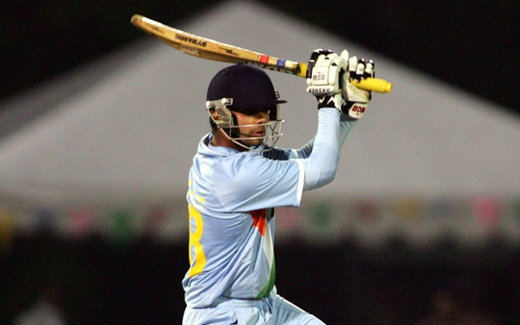
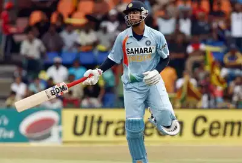
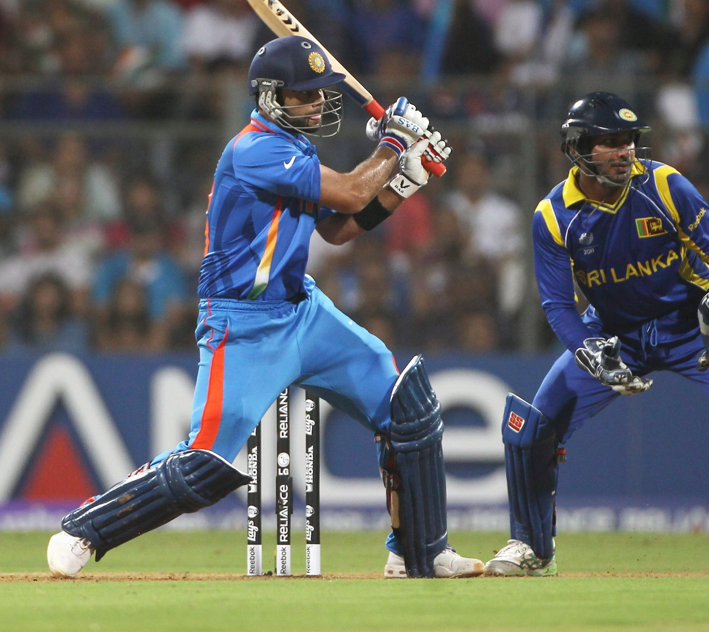
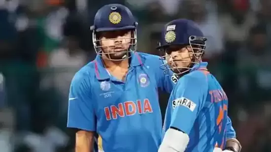
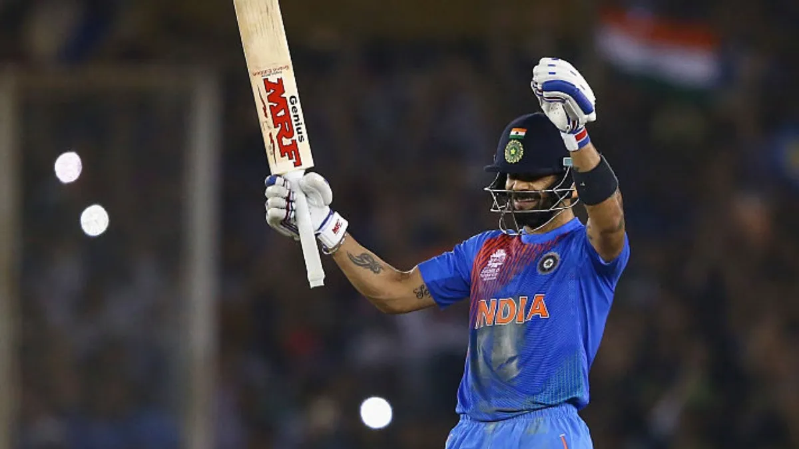
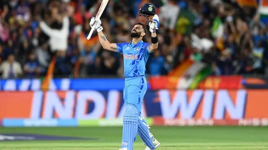
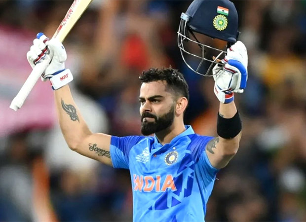
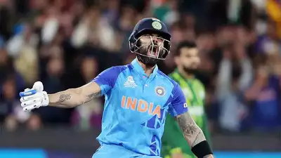
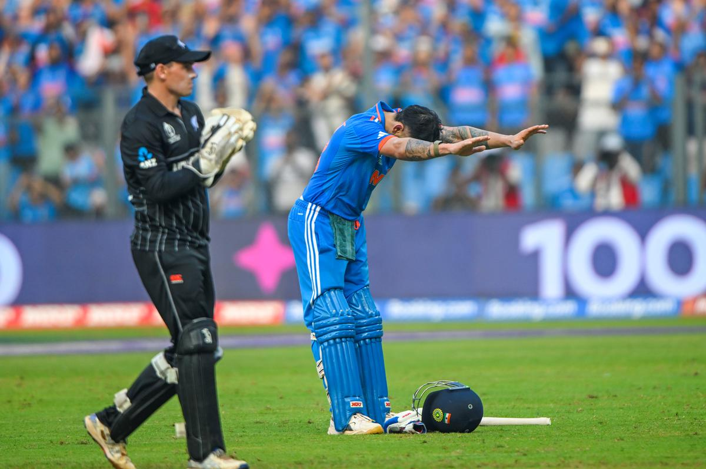
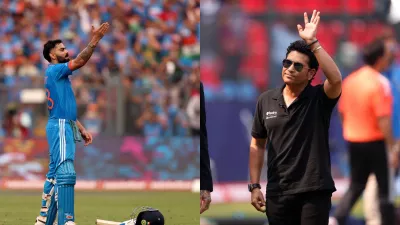

Stats of Virat Kohli
| Format | Matches | Runs | Averages | Hundereds | Fifties |
| Test | 111 | 8676 | 49.3 | 29 | 29 |
| ODI | 292 | 13848 | 58.7 | 50 | 80 |
| T20 | 115 | 4008 | 52.7 | 1 | 37 |
Grind through the ranks
He soon joined the senior Men in Blue in Sri Lanka, come August 2008. In the absence of the regular openers, Virat Kohli was given a chance to open the batting in the ODI series. He played some commendable knocks in his extended run as an opener, as India went on to win the ODI series. However, the established and formidable pair of Tendulkar and Sehwag kept Kohli out of the team The 20-year-old continued to impress for Delhi and dominated attacks, clearly demonstrating that he belonged at a much higher level; that junior cricket was beneath his standards. Kohli then traveled to Australia in 2009 for the Emerging players tournament and stamped his authority all over the bowling attacks. He added 'big-match temperament' to his résumé too, lacing a fluent hundred in the final against South Africa, and guiding his team to a clinical victory. The young prodigy, barely old enough to receive his man-of-the-match champagne, ended the tournament with 398 runs from 7 outings with two centuries and two fifties, ensuring that he remained fresh in the selectors' minds.
|  |  |
.avif)
|
Cementing a national spot
The selectors had no choice but to give Kohli another go in the Indian side, and this time he strung together a number of impressive scores. After being given an extended run, he repaid their faith by notching up his maiden ODI hundred in an impressive run-chase against Sri Lanka in December 2009 - his first of many exemplary knocks in run-chases. In the World Cup final of 2011, the biggest stage of them all, Kohli, along with his Delhi teammate Gautam Gambhir, pulled off a largely underrated rescue effort with an 83-run stand after losing the openers early. This knock played a crucial role in setting the platform for MS Dhoni's fabled knock of 91*, which eventually won India the World Cup on that enchanting evening in Mumbai.
In the hangover of the World Cup euphoria, Kohli continued to take giant strides in the limited-overs format. Three years after his ODI debut, he was finally handed the coveted Test cap in the Caribbean islands in July 2011, owing to the need to rest the senior players. After a series each against the Dukes ball and the SG ball, it was now time for his trial against the Kookaburra Down Under. In the first two Tests, he seemed to lack the technique to play in Australia, maintaining his low stance on the bouncy tracks. He also had a rather restricting trigger movement with his front-foot routinely coming across towards off-stump, thereby hindering the necessary movement to play back-foot shots such as the pull and the cut.
|  |

|
 |
That break-through innings…
We remember the accolades, but where did it all begin? There's always the one innings that made the world sit up and take notice; the 86-ball knock which he started off as a brash boy, but ended as a man. Chasing an improbable target of 321 off 40 overs to stay alive in the tournament, he laid into the Sri Lankan bowlers and carted his way to 133*, getting India home with more than 2 overs to spare, practically pulling them out of the airport after M.S. Dhoni rather ignorantly remarked that India had already been eliminated from the tournament. King Kohli had arrived. The king of the run-chase, and a plethora of ODI records in the modern age
Captaincy and a change in technique
With regular captain MS Dhoni ailing from an injury, Kohli was named stand-in captain for the first Test at Adelaide. After an abysmal tour of England, critics were sceptical of Kohli's performance in Australia in the Border-Gavaskar trophy in December. Kohli proved that they couldn't have been more wrong, as he scored two fluent hundreds in the first Test at Adelaide. His second innings masterclass of 141 almost pulled off a stunning run-chase on a notorious 5th day rank-turner, and went on to score a total of four hundreds on this tour. Saying that he had silenced critics would be an understatement.
Why 2016 is Virat Kohli's breakaway year
He has widened the gap between himself and other top order batsman in the world to the highest ever in his career, even as he notched up an enviable captaincy track-record.

|
 |

|
One could begin with Test matches. This has been Kohli’s best year yet. He has scored 1,215 runs at an average of 75.94 in his eighteen innings. His previous best average was 56 in 2013.
The performance stands out especially well when compared with his top order peers. The median batting average for those in the top seven batting-order slots was 31.25 for 2016 in the same period. The difference between the averages of Kohli and his peers is 44.69. He has never pulled so far ahead of the pack in any year since the start of his career in 2011.
Struggling pgase of virat kohli
Virat Kohli experienced a notable dip in his run-scoring output in international cricket between 2020 and 2022. The cricketer, often referred to as a run machine and hailed as the king of the game, faced a challenging phase where he struggled to convert his starts into substantial scores. The Virat Kohli, once considered a potential record-breaker for Sachin Tendulkar's 100th century, found himself in a precarious situation. Many critics and former cricketers began questioning his place in the Indian team, suggesting that he might no longer be a good fit. During this period, he was even relieved of the captaincy, and it seemed as if Kohli's time with the team might be coming to an end.
However, a turning point came in a crucial T20 World Cup group stage match between India and Pakistan. With India facing a challenging target of 161 runs and struggling at 39 for 4 wickets, Kohli stepped up with a remarkable innings that defied all expectations. Against the odds, he played an innings of sheer brilliance, displaying a level of class and determination that few had witnessed before in cricket history. Kohli's innings not only turned the match around but also silenced all the doubts and criticism surrounding his form.
The innings, particularly marked by two crucial sixes against Haris Rauf, showcased Kohli's unwavering confidence and his ability to rise to the occasion. His extraordinary performance not only secured India's victory in that match but also reaffirmed his status as the king of the game. The doubts that had surrounded Kohli's form were dispelled, and he once again demonstrated why he is considered one of the greatest batsmen in contemporary cricket. The king had reclaimed his throne, leaving a lasting impression on cricket fans and critics alike.
|  |  |  |
"50 ODI hundred"
Virat Kohli, who was celebrated as the "Invincible Man" in 2016, has outdone himself in 2023. This year, he smashed an incredible eight centuries, even breaking Sachin Tendulkar's record of 49 centuries. His batting skills are shining brighter than ever. This outstanding form comes at a crucial time, especially with the World Cup happening. Kohli's leadership and remarkable performances make him a key player for India. His journey from 2016 to now is not just about playing well but about consistently raising the bar and making history in the world of cricket.

|
 |  |